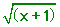
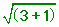
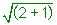
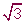
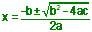
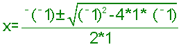
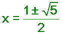
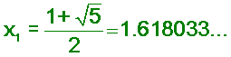
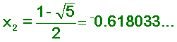

Jamie, an 8th grader, solves the quadratic equation
x2 - x - 1 = 0, by iteration, and he and Don write a program to do this on a TI84 Plus
Here is how Jamie solved the equation:
x2
- x - 1 = 0
add x and add 1 to both sides
x2 = x + 1
take the square root of both sides
x
=

Don showed Jamie how to
iterate the right side:
Jamie
chose 3 to put in for x:

=
2;
So we have the start of a
sequence 3,
2, ..
Now put 2 in for x to get

=

,
So our sequence now is 3, 2,
, .. Now put
 in for x, and keep doing that
forever. Don and Jamie wrote the program below to do this, on a TI 84 Plus
calculator:
in for x, and keep doing that
forever. Don and Jamie wrote the program below to do this, on a TI 84 Plus
calculator:
: input x
: display x
: 1->N
[this is a counter to keep track of how many times to iterate the
function]
: Lbl 4
[this tells where to come back to from the goto statement]
: disp
 [prints
out new x]
[prints
out new x]
:
->
x
[puts the new value of x in for x]
: N+1 -> N [inceases the counter]
:if N>10 [tests to see if its done more than
10 iterations-actually there are
11 numbers printed, the original guess, plus 10 more]
: stop
[if N>10, program stops]
: goto 4 [if N is not >10, the calculator goes to Lbl 4, to
repeat the cycle]
The 11 numbers printed out (to 8 decimal
places chosen) if you choose 3 for the original guess are:
3.00000000,
2.00000000, 1.7320505081, 1.65289165, 1.62876998, 1.62134820, 1.61905781, 1.61835034,
1.61813174, 1.61806420, 1.61804332
Don
explained to Jamie that the limit of this
infinite sequence
(the number it is
approaching) is an important number in mathematics, the Golden Mean (sometimes
called the Divine Proportion). Jamie knew the quadratic formula, and we used
that to solve the original quadratic equation:
x2 - x ' 1= 0
The solution to the general quadratic equation
ax2 + bx + c = 0 is

In our case a = 1, b = - 1 , and c = - 1, then
substitute these in the formula

simplifying

This gives the 2 answers for our quadratic
equation x2
- x ' 1= 0

and

The
1.618033... is the Golden Mean and shows up in nature where the Fibonacci
numbers are found (see ch.7 in Don's books for the Fibonacci numbers and ch.8
for other ways to solve a quadratic equation by iteration).